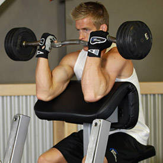
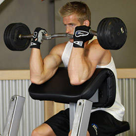
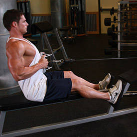
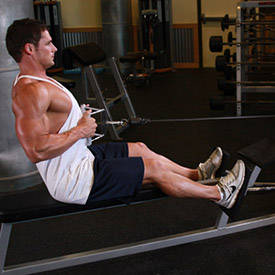

Podignite šipku iznad sebe sa ispruženim rukama. Lagano spuštajte šipku dok vam ne dotakne grudi. Podignite šipku u početni položaj. Ponovite vežbu. Udah na dole. Izdah na gore. Pokret na dole je sporiji od onog na gore. Vežbu treba raditi ili sa trening partnerom ili sa manjim težinama, zbog bezbednosti.
Vežba se izvodi isto kao i klasican benč pres s tim sto je klupa uzdignuta i telo je u kosom položaju. Rade drugi mišići tako da treba biti oprezan jer možda nećete uspeti da podignete onu težinu kao u klasičnom benču. Važi isti savet: neka neko bude tu da vam pomogne.
Vežba se izvodi na kosoj klupi sa glavom naniže. Rade donji mišići grudi. Izvodi se isto kao klasičan benč. Ovu vežbu možete izvoditi i sa bućicama ili jednoručnim tegovima.

Leđa moraju biti prava. Pogled ide ispred sebe. Ruke su u širini ramena. Udan na dole, izdah pri podizanju. Laktovi pored tela, ne sa strane.
Ova vezba je skoro ista kao kosi benč pres. Jedina razlika je što se koriste bućice. Opcija jeste i da se ruke rotiraju u toku dizanja.


Lezite na klupu i postavite bućice iznad sebe. Lagano raširite ruke skoro do vodoravnog položaja i vratite ih nazad. Prilikom spuštanja udah, izdah prilikom podizanja. Budite oprezni dok izvodite ovu vežbu i u početku ne koristite veće težine. Savijte blago laktove prilikom spuštanja tako da bućice budu malo iznad visine tela.

Sedite na ivicu klupe i uzmite teg jednom rukom. Stavite ruku između nogu i naslonite lakat na butinu iznad kolena sa unutrasnje strane butine. Podižite teg savijanjem lakta. Nadlaktica i ramena su fiksirani.
 

Sedite za klupu i približite telo naslonu. Stavite laktove i nadlaktice na naslon i poduhvatite teg sa obe ruke sa palčevima ka spolja. Podižite teg savijajući laktove. Ispružite laktove i ponovite vežbu.
Uhvatite šipku odozdo sa palčevima spolja u širini većoj od širine ramena. Noge u širini kukova. Leđa pravo. Podižite teg savijajući laktove. Leđa ne pomerajte.
Ova vežba je istovetna prethodnoj ali se izvodi na kross mašini.


Lezite na krupu i uzmite dvoručni teg iznad grudi kao da radite benč. Lagano savijajte ruke u laktovima dok šipka ne dotakne čelo. Vratite ruke u početni položaj i ponovite vežbu. Ova vežba se na engleskom zove Scullcrusher tako da budite oprezni i ne pokušavajte odmah da podignete velike težine.
Vežba je skoro identična prethodnoj s tim što se koriste dve bućice i ruke su okrenute dlanovima jedna ka drugoj. Tegovi se drže iznad grui u širini glave i pri spuštanju dolaze do slepoočnica.
Postavite laktove pored tela i uhvatite šipku sa dlanovima na dole. Povlačite šipku nadole ispravljajuci ruke u laktovima. Ne pomerajte laktove. Ako ne možete da uradite vežbu pravilno, smanjite težinu.
Uzmite teg sa obe ruke i podignite ga iznad glave. Leđa su pravo. Noge su u širini kukova. Savijajte ruke u laktovima i polako spuštajte teg iza glave. Vratite ruke u početni položaj. Ponovite vežbu.

Uhvatite sipku za krajeve sa palčevima ka unutra i sedite tako da noge "zaglavite" na za to predviđenim mestima. Povucite šipku na dole, ispred lica, dok ne dotakne grudi. Polako vratite šipku u početni položaj. Ponovite vežbu.
 

Za ovu vežbu možete koristiti nekoliko različitih nastavaka koji se montiraju na kabal. Poenta je ista. Uhvatite šipku ispruženih ruku. Sedite tako da noge budu skoro ispravljene i oduprite se njima na predvidjenom mestu. Povucite šipku ka sebi. Telo možete poviti ka nazad ali nemojte ustajati. Lagano vratite šipku nazad. Ponovite vežbu.
Naslonite se jednom rukom i jednim kolenom na klupu. Ledja treba da su pravo, a ruka siguran oslonac. Celo telo je povijeno u kukovima. Drugom rukom držite teg pored klupe u visini ramena. Povucite teg na gore ka ramenima. Vratite teg na dole. Ponovite vežbu.
Vežba je slična prethodnoj ali ne postoji oslonac osim nogu i radi se sa obe ruke. Telo savijeno u kukovima. Ruke ispružene. Teg se podiže sa obe ruke ka ramenima. I kod ove i kod prethodne vežbe ne sme se preterivati sa težinom.
Lezite na stomak i ispružite ruke ispred sebe. Opcija je da stavite ruke iza glave. Podignite gornji deo tela naviše. Spustite telo. Ponovite vežbu.

Stanite uspravno sa nogama u širini kukova. Držite bućice pored tela. Podignite bućice sa strane sa ispruženim rukama do visine ramena. Spustite ruke. Ponovite vežbu. Kod ove vežbe je bitno saviti malo laktove, jer može doći do povrede.

Držite tegove u visini glave, sa savijenim laktovima i dlanovima ka napred. Podignite tegove iznad glave i ispružite ruke. Vratite ruke u početni položaj. Ponovite vežbu.
Ista vežba kao i prethodna samo što se radi na specijalnoj mašini za to.


Uzmite dva manja tega i držite ih ispred sebe sa ispruženim rukama. Podignite ih ispred sebe sa ispruženim rukama do visine ramena. Vratite nazad. Ponovite vežbu.
Noge malo šire u odnosu na širinu kukova. Ruke ispred tela. Ledja pravo sve vreme. Celo stopalo je na zemlji sve vreme. Spustite se dole i podignite. Jednostavno je. Nije.
Za ovu vežbu je potrebna odgovarajuća sprava koja postoji u većini teretana. Početni položaj je sedeći sa savijenim kolenima. Ispravljajte noge u kolenima dok ne dodjete do maksimuma. Savijte lagano kolena. Ponovite vežbu.
I za ovu vežbu je potrebna odgovarajuća mašina ali je ima u svim teretanama. Sedite i naslonite se leđima. Gurate nogama na gore. Skupite ponovo noge. Ponovite.
Ovu vežbu možete raditi sa ili bez tegova. Iskoračite jednom nogom napred. Zadnju nogu savijte slobodno. Najčešća greška je da je prednje koleno ispred stopala ili iza stopala. Koleno na prednjojj nozi je iznad stopala.
Sedite na predviđenu mašinu i ispravite leđa. U početnom položaju noge su ispružene. Savijajte kolena do kraja. Ledja su prava i naslonjena na naslon. Vratite noge u početni položaj. Ponovite vežbu.
Vežbu možete raditi sa i bez tegova. Noge u širini kukova. Podižete se na prste i spuštate.